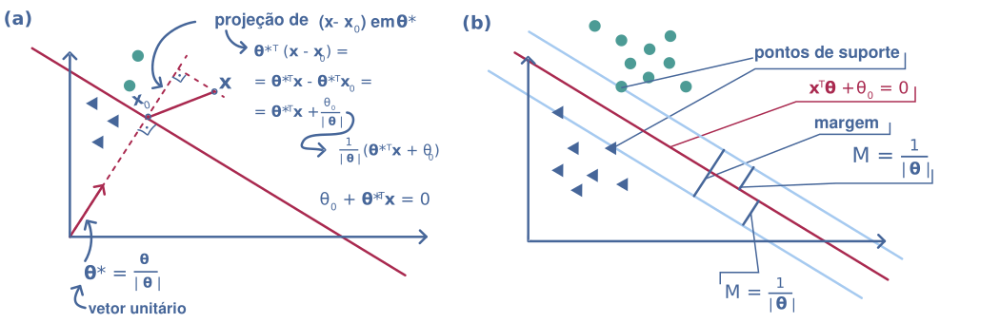
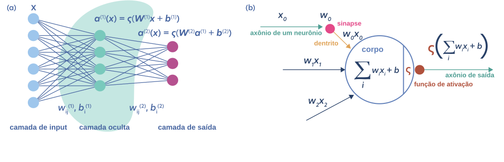
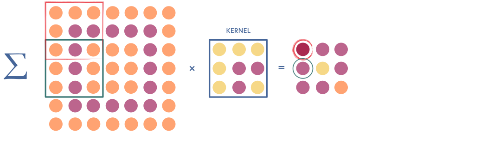
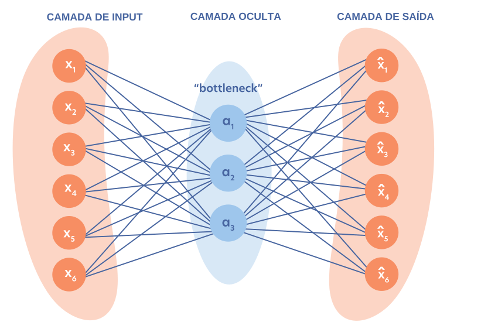
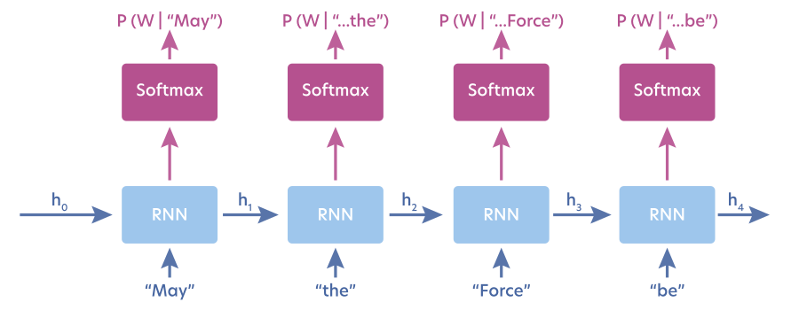
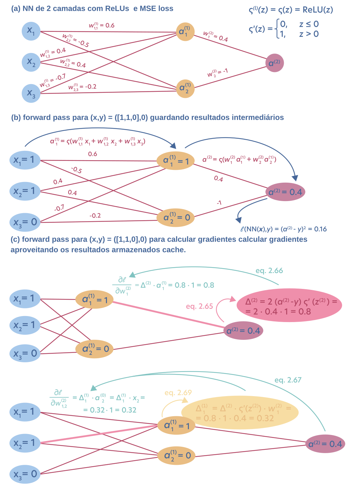

10. Modelos de Machine Learning¶
import fitz # PyMuPDF
from IPython.display import SVG, display
import re
def plot_pdf_as_svg(pdf_path, zoom=2.0, width=800, height=600):
"""
Lê um PDF de uma página (gráfico), aplica zoom interno (matrix) no conteúdo,
e também ajusta a tela externa (width, height) do SVG final.
"""
doc = fitz.open(pdf_path)
page = doc[0]
# Cria matriz de zoom
matrix = fitz.Matrix(zoom, zoom)
# Gera SVG com conteúdo escalado
svg_text = page.get_svg_image(matrix=matrix)
# Substitui a tag <svg> para ajustar a moldura externa (pixels finais)
svg_tag_pattern = r'<svg\b[^>]*>'
new_svg_tag = (f'<svg xmlns="http://www.w3.org/2000/svg" '
f'xmlns:xlink="http://www.w3.org/1999/xlink" '
f'width="{width}" height="{height}">')
svg_text = re.sub(svg_tag_pattern, new_svg_tag, svg_text, count=1)
# Exibe
display(SVG(svg_text))
doc.close()
10.1. Regressão linear (ridge)¶
10.2. Regressão logística¶
10.3. Support vector machines (SVM)¶
# ler figura fig_2_5.pdf
plot_pdf_as_svg('../../_static/fig_2_5.pdf', zoom=2.4, width=1050, height=340 )

10.4. Redes Neurais¶
plot_pdf_as_svg('../../_static/fig_2_6.pdf', zoom=2.4, width=1050, height=340 )

plot_pdf_as_svg('../../_static/fig_2_7.pdf', zoom=2.4, width=1050, height=340 )

10.5. Autoencoders¶
plot_pdf_as_svg('../../_static/fig_2_8.pdf', zoom=2.4, width=850, height=550 )

10.6. Redes neurais autoregressivas (ARNN)¶
plot_pdf_as_svg('../../_static/fig_2_9.pdf', zoom=2.4, width=900, height=350 )

11. Backpropagation¶
plot_pdf_as_svg('../../_static/fig_2_10.pdf', zoom=2.4, width=1050, height=1480 )
